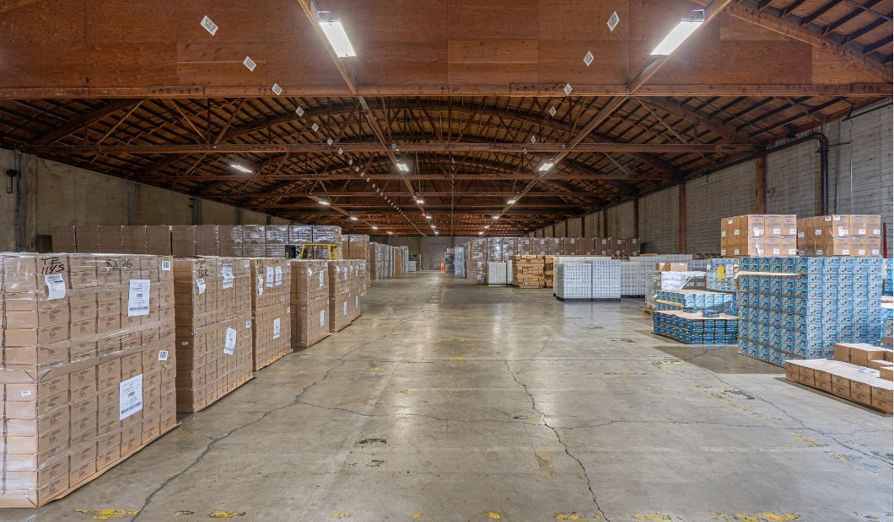

Newlab, inside the Brooklyn Navy Yard
The clearest model for what we intend is Newlab: a venture and maker community for hard technology, housed in one rehabilitated industrial building inside a much larger working campus. It is not a co-working space. It lowers three barriers that stop hardware founders, infrastructure to prototype, real projects to pilot, and access to capital, and it sits inside a city-owned industrial yard run for jobs rather than rent. That nested structure, a curated maker building inside a mission-run campus, is exactly the shape Edgewater can take.


What Newlab is
Founded 2016 by David Belt and Scott Cohen, modeled on the MIT Media Lab, in Building 128, an 1899 Navy machine shop rebuilt into roughly 84,000 square feet of studios, labs, and a full fabrication shop, metal, wood, 3D printing, electronics, and CNC.
How it was built
A public landlord owned and rehabbed the shell; a private operator brought the vision and curation. The roughly $82.8M Building 128 project was funded with $25M of New Markets Tax Credits plus historic tax credits, federal, state, and city grants, and private capital. No single balance sheet carried it.
Why it works
Shared tools, a curated community, and real-world pilots compound. Newlab reports more than 300 member startups and over 1,000 members across its locations, and it has since opened a second hub at Michigan Central in Detroit with Ford. The model is portable.